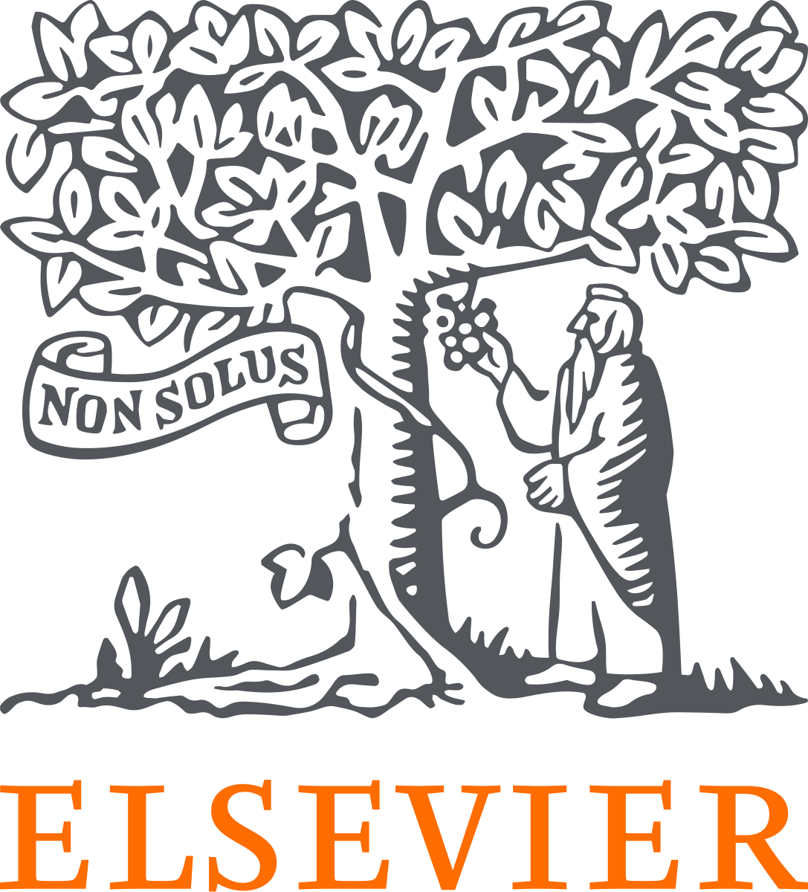

Publications
Below is a list of my journal articles, conference proceedings, and dissertations. For the most up-to-date information, please see my Google Scholar profile.
Last updated: November 2025.
Published journal articles
-
Vasheghani Farahani, M. (2024). Application of space renormalisation technique for spatiotemporal analysis of effective thermal conductivity in multiphase porous materials. International Communications in Heat and Mass Transfer, 159, 108129.
-
Lang, C., Chen, Z., Vasheghani Farahani, M., Hassanpouryouzband, A., Zhang, L., Zhao, J., & Song, Y. (2024). Spontaneous lifting and self-cleaning of gas hydrate crystals. ACS Nano, 18(49), 33671–33680.

-
Zhou, T., Vasheghani Farahani, M., An, S., & Niasar, V. (2024). Unravelling combined effect of pore geometry and wettability on immiscible displacement characteristics and entry capillary pressure. Physics of Fluids, 36(11), 112129.
-
Vasheghani Farahani, M., & Mousavi Nezhad, M. (2022). On the effect of flow regime and pore structure on the flow signatures in porous media. Physics of Fluids, 34(11), 115139.
-
Vasheghani Farahani, M., Hassanpouryouzband, A., Yang, J., & Tohidi, B. (2021). Development of a coupled geophysical–geothermal scheme for quantification of hydrates in gas hydrate-bearing permafrost sediments. Physical Chemistry Chemical Physics, 23(42), 24249–24264.
-
Vasheghani Farahani, M., Hassanpouryouzband, A., Yang, J., & Tohidi, B. (2021). Insights into the climate-driven evolution of gas hydrate-bearing permafrost sediments: implications for prediction of environmental impacts and security of energy in cold regions. RSC Advances, 11(24), 14334–14346.
-
Vasheghani Farahani, M., Guo, X., Zhang, L., Yang, M., Hassanpouryouzband, A., Zhao, J., Yang, J., Song, Y., & Tohidi, B. (2021). Effect of thermal formation/dissociation cycles on the kinetics of formation and pore-scale distribution of methane hydrates in porous media: A magnetic resonance imaging study. Sustainable Energy & Fuels, 5(5), 1567–1583.
-
Liu, Z., Vasheghani Farahani, M., Yang, M., Li, X., Zhao, J., Song, Y., & Yang, J. (2020). Hydrate slurry flow characteristics influenced by formation, agglomeration and deposition in a fully visual flow loop. Fuel, 277, 118066.
-
Vasheghani Farahani, M., Hassanpouryouzband, A., Yang, J., & Tohidi, B. (2020). Heat transfer in unfrozen and frozen porous media: experimental measurement and pore-scale modelling. Water Resources Research, 56(9), e2020WR027885.
-
Hassanpouryouzband, A., Vasheghani Farahani, M., Joonaki, E., Takeya, S., Ruppel, C., Yang, J., English, N., Schicks, J., Edlmann, K., Mehrabian, H., Aman, Z., & Tohidi, B. (2020). Gas hydrates in sustainable chemistry. Chemical Society Reviews, 49(15), 5225–5309.
-
Movahedi, H., Vasheghani Farahani, M., & Masihi, M. (2020). Development of a numerical model for single- and two-phase flow simulation in perforated porous media. Journal of Energy Resources Technology, 142(4), 042901.

-
Vasheghani Farahani, M., Foroughi, S., Norouzi, S., & Jamshidi, S. (2019). Mechanistic study of fines migration in porous media using lattice Boltzmann method coupled with rigid body physics engine. Journal of Energy Resources Technology, 141(12), 123002.
-
Okwananke, A., Hassanpouryouzband, A., Vasheghani Farahani, M., Yang, J., Tohidi, B., Chuvilin, E., Istomin, V., & Bukhanov, B. (2019). Methane recovery from gas hydrate-bearing sediments: An experimental study on the gas permeation characteristics under varying pressure. Journal of Petroleum Science and Engineering, 180, 435–444.
-
Hassanpouryouzband, A., Vasheghani Farahani, M., Yang, J., Tohidi, B., Chuvilin, E., Istomin, V., & Bukhanov, B. (2019). Solubility of flue gas or carbon dioxide–nitrogen gas mixtures in water and aqueous solutions of salts: experimental measurement and thermodynamic modeling. Industrial & Engineering Chemistry Research, 58(8), 3377–3394.
-
Movahedi, H., Vasheghani Farahani, M., & Jamshidi, S. (2017). Application of hydrated basil seeds (HBS) as the herbal fiber on hole cleaning and filtration control. Journal of Petroleum Science and Engineering, 152, 212–228.
Conference proceedings
-
Zhou, T., Vasheghani Farahani, M., Shokri, J., & Niasar, V. (2025, May). Dynamics of brine drying and salt precipitation and growth in porous media during CO2 injection. In Proceedings of the 17th Annual Meeting of the International Society of Porous Media.
-
Zhou, T., Vasheghani Farahani, M., An, S., & Niasar, V. (2024, May). Combined effect of pore geometry and wettability characteristics on entry capillary pressure. In Proceedings of the 16th Annual Meeting of the International Society of Porous Media.
-
Shidvash, S., Vasheghani Farahani, M., Nezhad, M. M., & Sadeghnejad, S. (2023, May). Predicting velocity field of porous rocks using convolutional neural networks. In Proceedings of the 15th Annual Meeting of the International Society of Porous Media.
-
Vasheghani Farahani, M., & Mousavi Nezhad, M. (2022, June). Application of lattice Boltzmann method in pore-scale characterisation of flow dynamics in three-dimensional porous media. In Proceedings of the 14th Annual Meeting of the International Society of Porous Media.
-
Vasheghani Farahani, M., Salehian, M., & Jamshidi, S. (2021, October). A dynamic model for non-Newtonian drilling fluid’s filtration in casing drilling technology. In 82nd EAGE Annual Conference & Exhibition (Vol. 2021, No. 1, pp. 1–5). European Association of Geoscientists & Engineers.
-
Vasheghani Farahani, M., Hassanpouryouzband, A., & Edlmann, K. (2021, June). Pore-scale investigation of the capillary pressure effect on the upward migration of hydrogen through water-filled porous media. In Proceedings of the 13th Annual Meeting of the International Society of Porous Media.
-
Norouzi, S., Soleimani, R., Vasheghani Farahani, M., & Rasaei, M. R. (2019, June). Pore-scale simulation of capillary force effect in water–oil immiscible displacement process in porous media. In 81st EAGE Conference and Exhibition 2019 (Vol. 2019, No. 1, pp. 1–5). European Association of Geoscientists & Engineers.
-
Norouzi, S., Nazari, M., & Vasheghani Farahani, M. (2019, June). A novel hybrid particle swarm optimization–simulated annealing approach for CO2–oil minimum miscibility pressure (MMP) prediction. In 81st EAGE Conference and Exhibition 2019 (Vol. 2019, No. 1, pp. 1–5). European Association of Geoscientists & Engineers.
-
Vasheghani Farahani, M., Rostami, A., Kamari, A., Joonaki, E., & Ghanaatian, S. (2018, June). Accurate estimation of minimum miscibility pressure during nitrogen injection into hydrocarbon reservoirs. In 80th EAGE Conference and Exhibition 2018 (Vol. 2018, No. 1, pp. 1–5). European Association of Geoscientists & Engineers.
-
Vasheghani Farahani, M., Shams, R., & Jamshidi, S. (2018, June). A robust modelling approach for predicting the rheological behavior of thixotropic fluids. In 80th EAGE Conference and Exhibition 2018 (Vol. 2018, No. 1, pp. 1–5). European Association of Geoscientists & Engineers.
-
Vasheghani Farahani, M., Jahanpeyma, Y., & Taghikhani, V. (2018, June). Dynamic modeling and numerical simulation of gas lift performance in deviated oil wells using the two-fluid model. In 80th EAGE Conference and Exhibition 2018 (Vol. 2018, No. 1, pp. 1–5). European Association of Geoscientists & Engineers.
-
Vasheghani Farahani, M., Soleimani, R., Jamshidi, S., & Salehi, S. (2014, February). Development of a dynamic model for drilling fluid’s filtration: implications to prevent formation damage. In SPE International Symposium and Exhibition on Formation Damage Control. Society of Petroleum Engineers.
Dissertations
-
PhD dissertation:
“Insights into climate-driven evolution of gas hydrate-bearing permafrost sediments”, 2021, Heriot-Watt University, UK.
Supervisors: Professor Bahman Tohidi and Dr Jinhai Yang.
-
MSc thesis:
“Mechanistic study of fines migration in porous media using lattice Boltzmann method coupled with a rigid body physics engine”, 2015, Sharif University of Technology, Iran.
Supervisor: Dr Saeid Jamshidi.
-
BSc thesis:
“Development of a dynamic model for drilling fluid’s filtration”, 2013, Sharif University of Technology, Iran.
Supervisor: Dr Saeid Jamshidi.